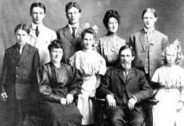

Hovander Family

Hakan Hovander was a Swedish architect (b. 1841 d. 1915). He immigrated with his family
to Whatcom
County in 1898. Hovander bought the acreage with his namesake that same year.
In 1901, Hovander
began
building the 6800 square feet house that is now standing in Hovander.
After Hovander passed away in 1915, his children scattered but his son Otis remained at the homestead
with his mother until her passing in 1936.